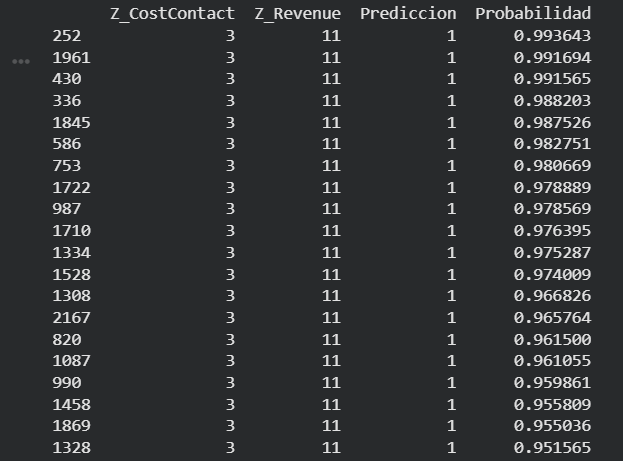

Proyecto de Machine Learning aplicado a marketing en retail. Analiza datos de clientes para predecir comportamiento y optimizar decisiones.
Las empresas no saben qué clientes responderán a campañas. Este modelo ayuda a predecirlo.
Python · Pandas · Machine Learning

Este gráfico muestra cómo el modelo predice qué clientes responderán a campañas de marketing.